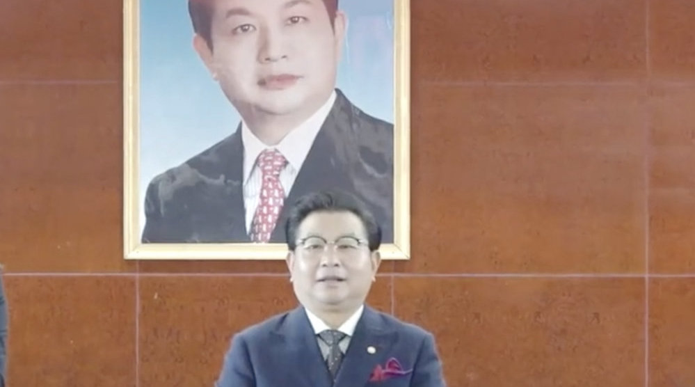

不知道这家公司台下的人到底是真心敬佩，还是心里什么都明白只是在演戏@北京人捍卫北京城:#上海文峰秘书夸老板掌握万物规律#【彩虹屁的天花板来了 #上海文峰秘书夸老板有天眼#】看呆了！上海文峰公司总裁秘书在公司官号发文狂赞老板，夸老板有天眼，掌握万物之规律，是首屈一指的三百六十行状元大满贯。此前，因为消费者投诉较多，上海消保委已两次约谈上海文峰公司，并向社会警示，该公司商业模式或暗藏重大风险 。@奇点财经 奇点财经的微博视频 682万次播放 00:60
什么时候都不能上头。第一重要的，保命。第二重要的，买便宜货。第三重要的，该走就走。没什么比保命重要。命没了，以前挣多少都是虚幻。但我们活着并不是为了活着，来资本市场也不是为了保本。所以在保命的前提下低买高卖。不上头的低买高卖。其实就这么简单。可惜，有人只记得赚钱，有人只记得保命，全都忘了初心。
刚听说一个故事，说有个渔夫在一片海域捞鱼，捞着捞着发现这片海域太多人了，搞得很难捞到。另外他发现有些鱼好像不是那么可口。所以他把船开到了另一片海域继续捞。不是重新开始，是继续。渔夫正让水手们制作航海图，告诉家乡的乡亲们新海域的位置。
 奇点财经的微博视频
奇点财经的微博视频